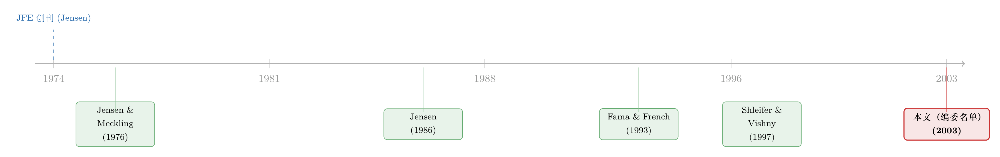

八个名字撑起的一页：从 2003 年 JFE 的编委名单里，读出一门学科的隐秘版图
本文读的是 《Editorial Board》(2003, Journal of Financial Economics 68(3))：这「篇」东西没有摘要、没有数据、没有结果，只有一位主编、一位创刊人和八位顾问编辑的名字。但正是这张不到一页的名单，像一张底片，把 2003 年前后整个金融经济学的范式格局、甚至它内部最深的那道裂缝，一次显影了出来。
1 一篇没有正文的「论文」
先说一句可能有点冒犯的话：本文要评述的这「篇论文」，从头到尾只有十来行字，连一句完整的陈述句都没有。
它的「标题」叫 Editorial Board（编委会）。它的「正文」是这样的——一位执行主编 (Managing Editor) G. William Schwert，一位创刊编辑 (Founding Editor) Michael C. Jensen，以及八位顾问编辑 (Advisory Editors)：Michael J. Barclay、Eugene F. Fama、Kenneth French、Wayne Mikkelson、Jay Shanken、Andrei Shleifer、Clifford W. Smith, Jr.、René M. Stulz。然后是一行卷号：Volume 68, Number 3 (2003)。
就这些。
按理说，这种页面在任何一本期刊里都是「翻过去就忘」的存在——它和版权声明、投稿须知、页眉页脚一样，属于学术出版的「结构性家具」，没人会停下来读。可这个博客有个不成文的传统：偏要在这些被所有人跳过的页码上停一停（这一点，可参见《卷末那一页：从一份「索引」里，读出 2003 年的金融学在想什么》、《八行标题：一张目录，如何画下 2003 年公司治理的全景》，以及《页码消失的那一天：JFE 给每篇文章发了一个「身份证」》）。
因为这些「非论文」其实是期刊的元数据 (metadata)——关于知识如何被生产的信息。一篇正文告诉你「答案是什么」；而一张编委名单告诉你的是更前置、也更隐蔽的一件事：「谁有资格决定什么算答案」。
于是一个自然的问题是：这八个名字，到底是一份礼节性的荣誉榜，还是真的藏着什么？
2 八个名字，就是一张学科地图
让我们把这张名单当成一份「数据」，认真读它的每一个观测值。
Eugene F. Fama。如果金融经济学有「教皇」，那一定是他。有效市场假说 (efficient market hypothesis, EMH) 是他立的旗，2013 年的诺贝尔经济学奖是这面旗的勋章。
Kenneth French。Fama 名字后面紧跟着的，是与他绑定了一辈子的合作者。Fama–French 这两个姓氏连在一起，本身就是一个专有名词——三因子模型 (three-factor model) 把「市场、规模、价值」三块积木拼起来，几乎重写了 1990 年代之后所有人做实证资产定价的方式（关于因子是怎么从一个变量的「构造方式」里长出来的，可参见《因子模型的成败，藏在一个变量的「构造方式」里》）。
Michael C. Jensen。名单上唯一挂着「创刊编辑」头衔的人，1974 年一手把这本刊办起来。他的代理成本 (agency cost) 与自由现金流 (free cash flow) 理论，是公司金融半部教科书的地基（这条线这个博客追过很多次，见《现金为什么一定要「还」出去？——四十年后，重读 Jensen 的自由现金流》 与《债务这副药，为什么不能全吃？——重读 Jensen 和 Meckling 五十年》；他本人的离世，也有一篇《送别迈克尔·詹森》）。
René M. Stulz。国际金融与公司风险管理的扛旗者，后来还做过 Journal of Finance 的主编。Clifford W. Smith, Jr.——衍生品与风险管理理论的元老。Jay Shanken——资产定价检验的计量大师，凡是做过两步法 beta 估计的人都绕不开他对「误差中的误差」的修正。Wayne Mikkelson 与 Michael J. Barclay——公司金融实证、资本结构与公司治理的中坚。
你看，把这八个名字摊开，几乎就是一张金融经济学的学科地图：资产定价（Fama、French、Shanken）、公司金融与代理理论（Jensen、Mikkelson、Barclay）、风险管理与国际金融（Stulz、Smith）。这不是一份名单，这是一门学科在 2003 年的「主要矛盾分布图」。
接着，一个更有意思的问题浮上来了：这张图里，有没有哪两个点，本来是「冤家」？
3 真正的张力：Fama 与 Shleifer，同列一榜
有的。而且就明晃晃地印在同一栏里。
请把目光放回那串顾问编辑的名字，第二个是 Fama，倒数第三个是——Andrei Shleifer。
如果说 Fama 是有效市场假说的教皇，那 Shleifer 几乎就是行为金融 (behavioral finance) 这一派的「异端领袖」。他和 Vishny 1997 年那篇 The Limits of Arbitrage（套利的局限）几乎是对 EMH 的正面宣战：它论证的是，即便价格明明偏离了基本面，真实世界里的套利者也未必能、未必敢把它纠正回去——因为套利本身有风险、有成本、有「钱会被赎回」的约束。换句话说，市场可以长时间地、系统性地犯错。
这恰恰是 Fama 一生都在反驳的命题。2013 年的诺贝尔奖把 Fama 和 Shiller 同时请上台，被很多人调侃成「同时给主张地球是圆的和主张地球是平的两个人发奖」——而 Shleifer，正是那个「平派」阵营里最锋利的理论家之一。
这里有一个常被忽略的事实：Fama 和 Shleifer 不只是「观点不同」，他们是直接在彼此的论文里交过手的。EMH 与行为金融的争论，构成了过去三十年资产定价领域最核心的张力之一——而这两个人的名字，在这一页上只隔了五行。
于是反转出现了。
我们一开始以为编委名单是一份「同温层名册」——志同道合的人凑在一起办刊。可真相恰恰相反：一本顶级期刊的编委会，是这门学科里互相竞争的范式被迫坐在同一张桌子上的地方。 Fama 要替「市场是对的」把关，Shleifer 要替「市场会错」把关，而他们要共同决定，哪些稿子配得上 Journal of Financial Economics 的版面。
一本刊物的公信力，恰恰来自这种「敌对范式的共存」。如果编委会只剩 Fama 一派的人，那么任何质疑有效市场的好论文都可能被系统性地挡在门外；反之亦然。名单上这种刻意的「不和谐」，才是它最珍贵的地方。
4 编委会到底「生产」了什么——一页名单的识别问题
正经论文都有一节叫「识别策略」，回答「凭什么相信你的因果」。这页名单没有因果，但它有一个同样值钱的问题：这八个人，到底在生产什么？
答案是：他们在生产可信度 (credibility)。
学术出版的核心难题，本质上是一个逆向选择 (adverse selection) 问题。一篇新论文递上来，作者总说自己的发现是真的、是新的、是重要的——可读者没有能力逐篇去核验那些数据、那些回归、那些识别假设。市场上充斥着「柠檬」：p 值被挑过的、稳健性被藏起来的、结论被过度推销的。
期刊的编委会，就是这个柠檬市场里的「认证机制」。读者不必相信作者，但读者可以相信：这篇文章被 Fama、被 Shleifer、被 Stulz 这样的人（或他们信任的审稿人）盘问过、挑剔过、放行过。编委名单是一张集体担保书——名单上的声望越高、越多元、越「难搞」，这张担保书就越值钱。
这也解释了，为什么这一页要把每个人的全名、甚至中间名缩写（Clifford W. Smith, Jr.；Michael J. Barclay）都印得清清楚楚。在别处这是吹毛求疵，在这里这是「签名」——签名必须可信、必须可追溯到具体的那个人，担保才成立。
从这个角度看，2003 年这张名单还透露了一个时代信号：行为金融（Shleifer 的进入）已经不再是被主流排斥的「异类」，而是被请进了顶刊的「认证委员会」。一个范式被编委会接纳的那一刻，往往比它发表第一篇论文的那一刻，更能说明它在学科里真正站稳了脚。
文献脉络
把这一页名单放进时间里，它其实是一条更长的故事线上的一个切片。
1974 年，Jensen 与 Smith 等人创办 Journal of Financial Economics，从一开始就把它定位成「实证导向、关注公司金融与市场效率」的阵地。1976 年，Jensen 与 Meckling 的代理理论奠基；1986 年，Jensen 的自由现金流假说成型——公司金融的「Jensen 范式」由此立住。几乎同一时期，Fama 与 French 在 1990 年代初用三因子模型重塑了实证资产定价的语法。而到了 1997 年，Shleifer 与 Vishny 的「套利的局限」从另一个方向撕开了有效市场的口子。
这条线走到 2003 年，所有这些名字——市场效率的、因子模型的、代理理论的、行为金融的——都一起出现在了同一张编委名单上。这页纸不是脉络的「终点」，而是它的一张「合影」。

评论与延伸（Q&A + 研究方向）
(a) 几个可能的疑问
Q：把一页编委名单当「论文」来评述，是不是太牵强了？
从「有没有研究发现」的标准看，确实牵强——它没有任何可检验的命题。但从「学术出版的元数据」角度看，它信息量极大：它编码了「谁有把关权」这一最稀缺的资源分布。本文评的不是它的「结论」，而是它作为一份制度文件所揭示的学科结构。
Q：编委名单上有 Fama 又有 Shleifer，会不会只是惯例上的「挂名」，并不真在干活？
顾问编辑 (Advisory Editor) 与一线处理稿件的副主编 (Associate Editor) 确有分工，前者更偏战略与声望。但「挂名」本身就是产品——它生产的是公信力。读者在意的不是 Fama 是否逐字读了某篇稿，而是「这本刊由 Fama 这一级别的人背书」这件事是否可信。挂名与把关，在认证机制里并不矛盾。
Q：为什么强调 Fama 和 Shleifer 的对立，而不是其他人？
因为这是 2003 年前后金融经济学内部最大的一条裂缝：有效市场 vs. 行为金融。其他人多在「公司金融」「风险管理」等相对不那么意识形态化的领域。把对立面同时纳入编委会，最能体现一本顶刊「让竞争范式共同把关」的制度智慧。
Q：这一页能说明 JFE 在 2003 年「偏」公司金融还是「偏」资产定价吗？
名单结构暗示了一种平衡而非偏向：创刊人 Jensen 是公司金融的旗帜，但顾问席里 Fama、French、Shanken 三人撑起了资产定价的半壁。要真正回答「偏向」，得去数当年实际发表论文的主题分布，而不是只看名单（这正是《卷末那一页》那类「数目录」工作的价值）。
Q：为什么这种「非论文」也要被赋予 DOI、被正式归档？
因为现代学术出版要求每一个被印在卷期里的内容单元都可被引用、可被追溯。一旦编委会成员发生变动，这页名单就是「某年某月由谁把关」的法律式存证——它本身就是出版史的一手史料（关于 JFE 给每个内容单元发「身份证」的做法，见《页码消失的那一天》）。
(b) 几个可能的研究问题与提案
1. 编委会的「范式多样性」是否影响期刊的长期影响力？
【经济故事】如果编委会真的扮演认证与把关角色，那么一本刊物编委构成的「思想多样性」（比如同时容纳 EMH 与行为金融）应当影响它发表论文的多样性、被引广度，甚至避免「学派近亲繁殖」导致的创新衰减。 【可行性】中。可把过去四十年主要金融期刊的编委名单数字化，用每位编委的代表研究领域构造一个「多样性指数」，再与该刊后续若干年的论文主题熵、被引分布做面板回归。数据（历年编委名单、论文元数据、引用网络）基本可得；难点在识别——编委多样性与期刊声望互为因果，需要找到编委更替的外生冲击（如资深编委去世、退休）作为事件。
2. 一位「异端」编委进入顶刊编委会，是否改变了该领域论文的发表概率？
【经济故事】Shleifer 这样的行为金融学者进入 JFE 编委会，是否在其后显著提高了「质疑有效市场」类论文的录用与发表？这能直接检验「把关人构成 → 知识生产方向」的因果链。 【可行性】中偏低。理想做法是事件研究：以某位特定范式代表加入编委会为冲击，比较其前后该范式论文在本刊 vs. 对照刊的发表份额（双重差分）。难点是编委加入往往本身就是「该范式已经崛起」的结果，存在反向因果；需要相对外生的加入时点（如因他人离任而临时补位）。
3. 编委名单能否作为「学科范式更替」的领先指标？
【经济故事】一个新范式被请进顶刊编委会的时点，可能早于它在教科书、在引用量上「封神」的时点。若如此，编委名单的构成变化就是一门学科风向的「领先指标」。 【可行性】高。把若干顶刊几十年的编委名单按研究领域编码成时间序列，与各领域的论文产出、被引、获奖时点做时序比较即可。纯描述性、数据可得，doable；主要工作量在名单的整理与领域标注。
参考文献
说明：本「文」是一页编委名单，自身不含任何参考文献。下列条目为名单上几位编辑真正存在、且与本文叙事直接相关的代表作，供读者按图索骥。
- Jensen, M.C., & Meckling, W.H. (1976). Theory of the firm: managerial behavior, agency costs and ownership structure. Journal of Financial Economics 3(4), 305–360.
- Jensen, M.C. (1986). Agency costs of free cash flow, corporate finance, and takeovers. American Economic Review 76(2), 323–329.
- Fama, E.F., & French, K.R. (1993). Common risk factors in the returns on stocks and bonds. Journal of Financial Economics 33(1), 3–56.
- Shleifer, A., & Vishny, R.W. (1997). The limits of arbitrage. Journal of Finance 52(1), 35–55.